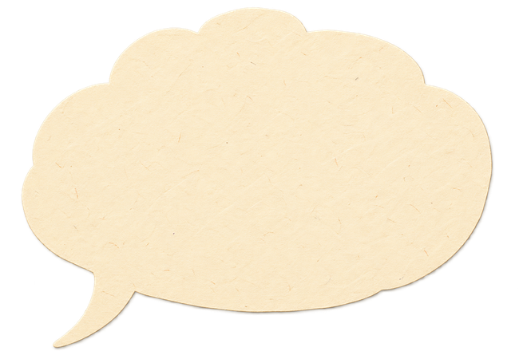

Exploring Tree Canopy and Urban Heat Inequality in Atlanta
~48%citywide tree canopy

10–30%canopy in downtown tracts

60–80%canopy in the outer ring

How do density,land use, and distanceshape tree coverage?
Draft figures from team slides · verification pending
CITY IN THE FOREST?
Atlanta’s green canopy is a patchwork.Explore the pieces. Compare what you find.
Basemap: USGS · The National Map
Select a range to highlight. Opacity does not change values. ▧ Zero values need verification.